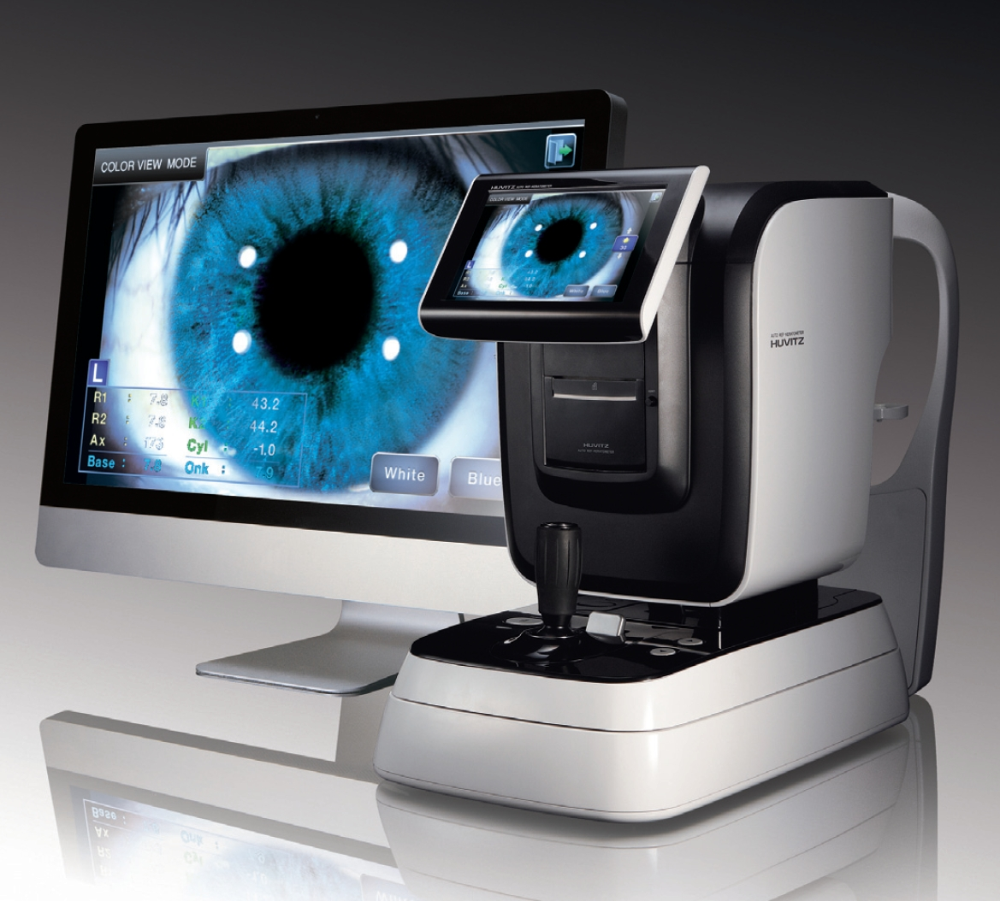

OFTAL MEDIC
Estudios que realizamos

- Refracción Computarizada
- Fondo de ojo
- Oftalmoscopía Binocular Indirecta (OBI)
- Tonometría - Presión Ocular
- Gonioscopía
- Curva diaria de presión
- Queratometría
- Plombaje de vías lagrimales
- Test de Rosa de Bengala
- Test de Ishihara
- Test de Schirmer
- Test de Lotmar
- Test de Amsler
- Paquimetría
- Topografía Corneal Computarizada
- Campo Visual Computarizado
- Tomografía de Coherencia Óptica (OCT)
- Ecometría
- Ecografía modo A y B
- Retinografía
- Angiofluoresceinografía (AGF)
- Tomografía Confocal de Nervio Óptico (HRT)